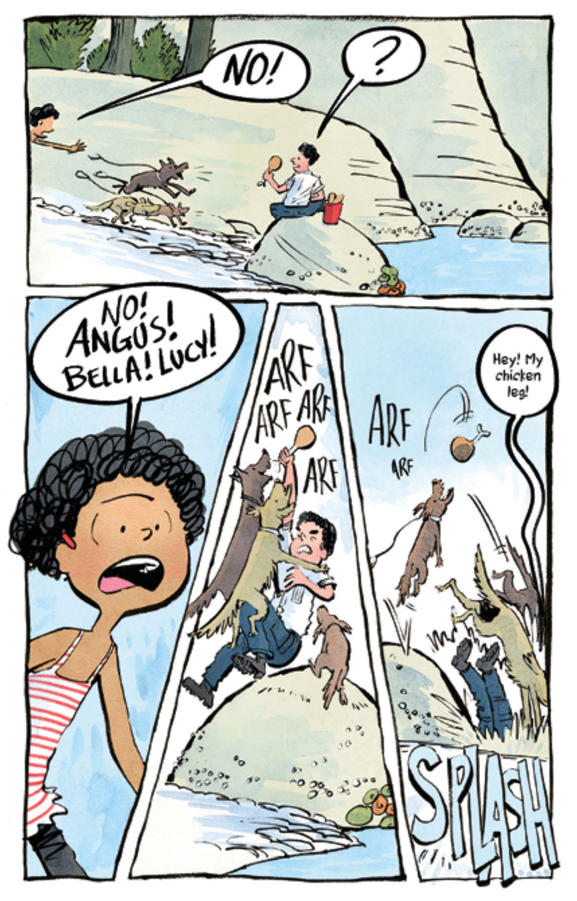

Sueño Bay is a fictional setting within the stories, but its misty forests, rugged beaches, and Pacific Northwest environment are modeled heavily after the Gulf Islands, in particular Salt Spring Island.

About the Creators
Author and illustrator team Mike and Nancy Deas raise their family on Salt Spring Island. Mike has called Salt Spring home his entire life, while Nancy grew up on nearby Mayne Island.

About the Series
The Sueño Bay Adventure Series follows friends Ollie, Kay, Jenna and Sleeves, an unlikely foursome, on a wild ride of adventures across Sueño Bay.
The magical and mysterious atmosphere of the real-life Gulf Islands heavily inspired the series' setting, complete with legendary moon creatures and hidden crystals.
Explore Sueño Bay
The map below displays Salt Spring Island. Each marker indicates a location that closely corresponds to fictional settings or plot points in one of the Sueño Bay adventures.